철도차량기사 (2008-05-11 기출문제)
1과목: 재료역학
1. 다음 그림에서 단순보의 최대 처짐량(δ1)과 양단고정보의 최대 처짐량(δ2)의 비(δ2/δ1)은 얼마인가? (단, 보의 굽힘 강성 EI는 일정하고, 자중은 무시한다.)
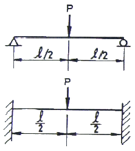
- 1/4
- 1/2
- 4/3
- 1
(정답률: 알수없음)

2. 코일 스프링에 하중 P가 가해져서 δ만큼 늘어났다면, 스프링에 저장된 탄성 에너지 U는 얼마인가?
- U = Pδ
- U = Pδ/2
- U = P2δ/2
- U = Pδ2/2
(정답률: 알수없음)
3. 단면적이 600mm2인 환봉에 다음과 같이 압축하중 P=90kN이 작용한다. 하중과 수직한 단면에서 25° 기울어진 a-b 단면에 작용하는 수직응력(σθ)과 전단응력(τθ)는?
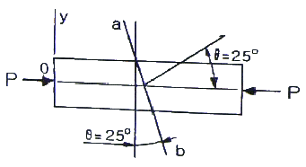
- σθ = -123.2 MPa, τθ = 57.4 MPa
- σθ = -57.4 MPa, τθ = 123.2 MPa
- σθ = -61.6 MPa, τθ = 28.7 MPa
- σθ = -28.7 MPa, τθ = 61.6 MPa
(정답률: 알수없음)
4. 동일 재료의 원형 중실축의 지름이 3배로 되면 비틀림 강도(Torsional stilffness)는 몇 배로 커지는가?
- 9
- 18
- 27
- 81
(정답률: 알수없음)
5. 그림과 같은 요소가 평면응력 상태로 σx = 65MPa, σy = -28MPa, τxy = -34MPa 의 응력을 받고 있다. x축으로 부터 θ = 10° 만큼 회전한 요소에 작용하는 응력을 구한 것은?
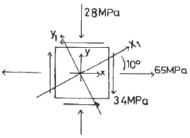
- σx1 = 20.4MPa, τx1y1 = -32.8MPa, σy1 = -11.3MPa
- σx1 = 43.7MPa, τx1y1 = -41.9MPa, σy1 = -12.4MPa
- σx1 = 50.6MPa, τx1y1 = -47.9MPa, σy1 = -13.6MPa
- σx1 = 61.2MPa, τx1y1 = -50.6MPa, σy1 = -14.9MPa
(정답률: 알수없음)
6. 욍경이 내경의 2배인 원통 단면의 보에서 최대 전단응력과 평균 전단응력의 비 τmax/τmean은?
- 15/28
- 28/15
- 14/3
- 3/14
(정답률: 알수없음)
7. 그림과 같은 돌출보에 집중하중이 A점에 5kN과 C점에 6kN이 작용하고 있을 때, B점의 반력은 몇 kN 인가?
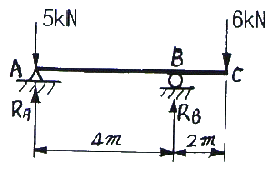
- 9
- 7.5
- 6
- 5
(정답률: 알수없음)
8. 그림과 같은 보에서 최대 굽힘 모멘트 몇 kN·m 인가?
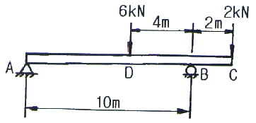
- 4
- 12
- 16
- 8
(정답률: 알수없음)
9. 탄성계수(E)가 200GPa 인 강의 전단 탄성계수(G)는 약 몇 GPa 인가? (단, 포아송비는 0.3 이다.)
- 66.7
- 76.9
- 100
- 267
(정답률: 알수없음)
10. 그림과 같은 스트레인 로제트(strain rosette)에서 εa = 100×10-6, εb = 200×10-6, εc = 900×10-6 이다. 이 때 주변형률의 크기는?
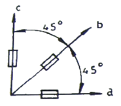
- ε1 = -10-3, ε2 = 0
- ε1 = 0, ε2 = -10×10-3
- ε1 = 10×10-3, ε2 = 0
- ε1 = 10-3, ε2 = 0
(정답률: 알수없음)
11. 내경이 16cm, 외경이 20cm인 중공축에 250N·m의 비틀림모멘트가 작용할 때 발생되는 최대 전단변형률은? (단, 전단 탄성계수는 G = 50 GPa 이다.)
- 5.4 × 10-6
- 6.7 × 10-6
- 7.2 × 10-6
- 8.7 × 10-6
(정답률: 알수없음)
12. 그림과 같은 단순 지지보에서 길이는 5m, 중앙에서 집중하중 P가 작용할 때 최대 처짐은 약 몇 mm 인가? (단, 보의 단면(폭×높이 = b×h)은 5cm×12cm, 탄성계수 E = 210 GPa, P = 25 kN으로 한다.)
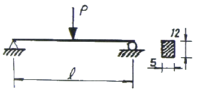
- 83
- 43
- 28
- 65
(정답률: 알수없음)
13. 지름 d인 원형 단면봉이 비틀림 모멘트 T를 받을 때, 봉의 표면에 발생하는 최대 전단응력은 얼마인가? (단, G는 전단 탄성계수, θ는 봉의 단위 길이마다의 비틀림각이다.)
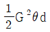
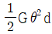
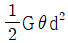
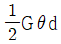
(정답률: 알수없음)
14. 보에서 원형과 정사각형의 단면적이 같을 때, 단면계수의 비 Z1/Z2는 약 얼마인가? (단, 여기에서 Z1은 원형 단면의 단면계수, Z2는 정사각형 단면의 단면계수이다.)
- 0.531
- 0.846
- 1.258
- 1.182
(정답률: 알수없음)
15. 다음과 같은 부재의 온도를 △T만큼 증가시켰을 때, 부재내에 발생하는 응력은? (단, 단면적 A, 탄성계수는 E, 열팽창계수는 α 이다.)
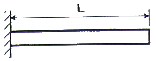
- 0
- α△T
- Eα△T
- △TL/AE
(정답률: 알수없음)
16. 유효지름 40mm,길이 500mm의 하단은 고정되고 상단은 자유인 기둥이 있다. 유효 세장비(effective slenderness ratio)는 얼마인가?
- 60
- 80
- 90
- 100
(정답률: 알수없음)
17. 그림과 같이 지름이 d1, d2, 길이가 L1, L2, 탄성계수가 E1, E2인 부재에 10kN, 30kN의 하중이 작용할 경우 총 변형량은 약 몇 mm 인가?
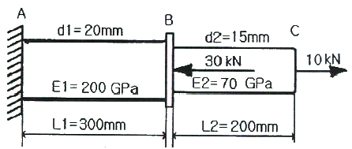
- -0.066
- 0.066
- 0.257
- -0.257
(정답률: 알수없음)
18. 지름 30mm의 원형 단면이며, 길이 1.5m인 봉에 85kN의 축방향 하중이 작용한다. 탄성계수 E = 70GPa, 포아송비 μ=1/3 일 때, 체적 증가량의 근사값은 몇 mm3 인가?
- 30
- 60
- 300
- 600
(정답률: 알수없음)
19. 양단 힌지로 된 목재의 장주가 200mm×200mm의 정사각형 단면을 가질 때 좌굴 하중은 약 몇 kN 인가? (단, 길이 ℓ = 5m, 탄성계수 E = 10GPa, 오일러 공식을 적용한다.)
- 330
- 430
- 530
- 630
(정답률: 알수없음)
20. 안지름이 150mm이고, 관 벽의 두께가 10mm인 알루미늄 파이프가 관 내의 유체로부터 2MPa의 압력을 받고 있다. 파이프 내에서의 최대 인장응력은 몇 MPa 인가?
- 15
- 7.5
- 25
- 30
(정답률: 알수없음)
2과목: 내연기관
21. 내연기관의 피스톤에서는 일반적으로 2개 이상의 피스톤 링이 사용된다. 이들 피스톤 링의 절개구가 한쪽 방향으로 몰릴 경우 발생하는 현상은?
- 피스톤에 소음이 일어난다.
- 노킹이 일어난다.
- 블로바이 현상이 일어난다.
- 출력이 증가한다.
(정답률: 알수없음)
22. 행정 체적이 1600cc인 4행정 기관이 1사이클 동안 흡입한 공기량이 1.6×10-3kg 라면 이 때의 체적 효율은? (단, 공기의 밀도는 1.26kg/m3 이다.)
- 약 65%
- 약 78%
- 약 85%
- 약 93%
(정답률: 알수없음)
23. 가솔린 기관에 터보차져를 장착할 때 압축비를 낮추는 가장 큰 이유는?
- 힘을 더 강하게 하기 위하여
- 연료 소비율을 좋게 하기 위하여
- 노킹을 없애려고
- 소음을 없애려고
(정답률: 알수없음)
24. 고속 디젤기관에 적용되는 열역학적 사이클은?
- 오토 사이클
- 사바테 사이클
- 카르노 사이클
- 디젤 사이클
(정답률: 알수없음)
25. 라디에이터의 구비조건과 관계 없는 것은?
- 가볍고, 강도가 클 것
- 냉각수 흐름 저항이 적을 것
- 공기 유동저항이 적을 것
- 단위 면적당 발열량이 적을 것
(정답률: 알수없음)
26. Wankel 기관의 장점 설명으로 틀린 것은?
- 운동부분은 모두 회전부분이므로 진동이 비교적 없다.
- 크랭크축 기구가 없으므로 기계 손실이 적다.
- 고속회전에 적합하다.
- 로터에 케이싱의 기밀유지가 아주 용이하다.
(정답률: 알수없음)
27. 가솔린기관의 점화장치에 대한 설명으로 틀린 것은?
- 점화코일의 1차 및 2차 권선비와 축전지 전압의 곱에 해당하는 고전압이 점화플러그에 유도된다.
- 속도가 빨라지면 진각장치에 의해 점화시기가 빨라진다.
- 고전압은 단속기에 의해 전화코일에 유도되고 배전기에 의해 각 실린더로 공급된다.
- 점화코일의 철심은 일반 변압기의 철심과 그 구조가 다르다.
(정답률: 알수없음)
28. 기관의 회전속도가 증가하면 일정영역 이상에서 출력이 감소하는 이유가 아닌 것은?
- 연소가 원활히 되지 못하여
- 왕복운동 부분의 관성력이 커져서
- 흡기의 관성력이 커져서
- 기계마찰 손실이 커져서
(정답률: 알수없음)
29. 크랭크 축 비틀림 진동에 대한 설명으로 틀린 것은?
- 회전속도 범위가 넓은 기관에서는 축계의 특성을 고려하여 위험속도를 사용범위 밖으로 놓을 수 있다.
- 비틀림 진동의 진폭이 증대하는 것을 억제하기 위하여 각종 형식의 댐퍼가 사용된다.
- 댐퍼에는 마찰 댐퍼와 점성 댐퍼가 사용된다.
- 진폭을 억제하는 댐퍼는 주로 직렬형 기관의 크랭크 축 자유단에 부착하여 사용된다.
(정답률: 알수없음)
30. 이론 평균 유효압력을 Pmth, 도시평균 유효압력을 Pmi, 제동편균 유효압력을 Pmb라 할 때, 압력이 큰 것부터 옳게 나열한 것은?
- Pmth ＞ Pmi ＞ Pmb
- Pmi ＞ Pmth ＞ Pmb
- Pmb ＞ Pmth ＞ Pmi
- Pmi ＞ Pmb ＞ Pmth
(정답률: 알수없음)
31. 피스톤 속도 12m/s, 회전수 3600rpm인 기관의 행정은?
- 0.12m
- 0.32m
- 0.56m
- 0.74m
(정답률: 알수없음)
32. 실린더 블록과 실린더를 별개로 한 실린더 라이너(liner)를 이용하는 장점이 아닌 것은?
- 실린더 마모시 링의 교체가 용이하다.
- 라이너 부분을 내마모성 재료로 쓸 수 있다.
- 열 응력이 적다.
- 실린더 주조가 쉽다.
(정답률: 알수없음)
33. 내연기관의 효율을 향상시키는 방법으로 틀린 것은?
- 압축비를 높인다.
- 배기가스의 온도를 높인다.
- 열손실을 줄인다.
- 흡입저항과 배기가스의 압력을 감소시킨다.
(정답률: 알수없음)
34. 가솔린 기관의 증기 폐쇄(vaporlock)는 어떤 원인에 의하여 가장 쉽게 일어나는가?
- 진한 혼합기
- 기화기의 불량
- 연료 파이프의 과열
- 연료펌프의 다이어프램 파손
(정답률: 알수없음)
35. 가솔린 기관에서 노킹에 직접적으로 가장 영향을 주는 것은?
- 압축비
- 회전수
- 연소실 간극체적
- 착화점
(정답률: 알수없음)
36. 디젤기관의 연소과정 중 압력 상승률이 가장 큰 과정은?
- 착화지연기간
- 급격연소기간
- 제어연소기간
- 후연소기간
(정답률: 알수없음)
37. 공연비가 희박할 때 일어나는 현상이 아닌 것은?
- 기관의 출력이 저하된다.
- 시동이 어렵다.
- 배기가스의 색이 흑색이 된다.
- 저속 및 공전이 어렵다.
(정답률: 알수없음)
38. 두 개의 밸브 및 밸브 기구가 실린더 헤드에 설치되어 있는 기관의 형식은?
- L-헤드형
- I-헤드형
- F-헤드형
- T-헤드형
(정답률: 알수없음)
39. 윤활유의 성질 개선향상을 위한 첨가제가 아닌 것은?
- 유동점 상승제
- 점도지수 향상제
- 산화방지제
- 청정제
(정답률: 알수없음)
40. 압력이 490 kPa이고, 비체적이 3m3/kg인 가스를 일정압력 하에서 팽창시켰더니 4.5m3/kg이 되었다면, 이 때 가스가 외부에 한 일은?
- 441 kN·m
- 539 kN·m
- 637 kN·m
- 735 kN·m
(정답률: 알수없음)
3과목: 기계설계
41. 코텅이음에서 로드엔드의 지름 80mm, 코터의 폭이 50mm, 두께가 30mm 일 때 1200kgf의 인장력이 작용한다면 로드엔드가 코터에 닿는 부분의 압축응력은 몇 kgf/mm2 인가?
- 0.125
- 0.275
- 0.500
- 0.625
(정답률: 알수없음)
42. 직렬로 합성된 스프링장치에서 25mm의 처짐이 발생하엿다. 각각의 스프링상수는 k1 = 20kgf/cm, k2 = 50kgf/cm 일 때, 이 스프링에 작용하는 하중은 약 몇 kgf 인가?
- 36
- 107
- 175
- 357
(정답률: 알수없음)
43. 동일재료로 제작된 중실축과 중공축이 있다. 중실축의 외경(d) = 40mm 이고, 중공축의 내경(di)/외경(do) = 0.6 일 때, 이들 두 축의 비틀림 강도가 동일하기 위한 중공축의 외경(do)은 약 몇 mm 인가?
- 32
- 42
- 52
- 62
(정답률: 알수없음)
44. 볼 베어링의 기본 동정격하중은 어떻게 정의되는가?
- 33.3 rpm으로 50시간 운전수명에 견디는 하중
- 33.3 rpm으로 500시간 운전수명에 견디는 하중
- 33.3 rpm으로 5000시간 운전수명에 견디는 하중
- 33.3 rpm으로 50000시간 운전수명에 견디는 하중
(정답률: 알수없음)
45. 베어링 번호 6312인 볼베어링에 그리스 윤활로 45000 시간의 수명을 주고자 할 때, 최고사용회전수로 허용되어지는 베어링 하중의 크기는 약 몇 N 인가? (단, 한계속도지수값은 dN = 180000[mm·rpm]이며, 기본동적 부하용량은 C = 81.9[kN]이고, 하중계수는 1.5 이다.)
- 2148
- 2717
- 3678
- 4082
(정답률: 알수없음)
46. 베벨 기어에서 피니언의 피치 원추각 α1 = 25°, 기어의 피치 원추각 α2 = 50° 일 때, 속도비 N1/N2 는 약 얼마인가?
- 1.0
- 1.4
- 1.8
- 2.2
(정답률: 알수없음)
47. 그림에서 브레이크 축과 브레이크 블록 사이의 압력 P를 55kgf이라 하고 a = 1200mm, b = 200mm, c = 100mm 일 때, 레버 끝에 가하게 되는 힘 F는 약 몇 kgf 인가? (단, 마찰계수 μ = 0.2 드럼의 회전방향은 그림과 같다.)
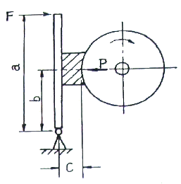
- 10
- 15
- 50
- 55
(정답률: 알수없음)
48. 역류를 방지하고 유체를 한쪽 방향으로만 흐르게 하는 밸브는?
- 스톱 밸브
- 나비형 밸브
- 감압 밸브
- 체크 밸브
(정답률: 알수없음)
49. 치직각 모듈은 m = 5, 나선각(helix angle)이 β = 20°, 잇수 24인 헬리컬 기어의 피치원의 지름은 약 몇 mm 인가?
- 120.00
- 130.00
- 127.70
- 158.04
(정답률: 알수없음)
50. 일반적인 플랜지 커플링에서 볼트의 수 6, 축지름 120mm, 볼트의 피치원 지름 330mm일 때 볼트의 전단만을 고려하여 설계할 경우, 볼트의 지름은 약 mm 이상이어야 하는가? (단, 축과 볼트는 동일 재료이다.)
- 12
- 16
- 21
- 26
(정답률: 알수없음)
51. 세레이션(serration) 이음에 관한 설명으로 틀린 것은?
- 3각형의 수많은 스플라인으로 되어 있다.
- 스플라인보다 이의 높이가 낮고 잇수가 많다.
- 동일 바깥지름의 스플라인 축보다 큰 회전력을 전달할 수 있다.
- 세레이션은 주로 동적인 이음에 사용되고, 이동용에 적합하다.
(정답률: 알수없음)
52. 그림과 같은 용접이음의 용접부 허용전단응력은 3kgf/mm2, 철판의 두께를 4mm, 용접길이가 10cm 일 때, 허용인장하중 P는 약 몇 kgf 까지 줄 수 있는가?
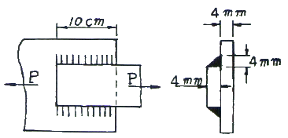
- 5230
- 1693
- 2350
- 2400
(정답률: 알수없음)
53. 벨트의 속도 v = 10m/s 이고, 긴장측 장력이 18kgf 일 때 전달동력(PS)은 약 얼마인가? (단,
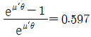
로 하고, 원심력은 무시한다.)- 1.43
- 1.76
- 3.29
- 3.95
(정답률: 알수없음)
54. 원동축과 종동축의 속도비가 1:1인 로프 전동장치의 전달동력은10kW, 로프의 속도가 7m/s일 때, 긴장측 로프의 허용장력은 약 몇 N 인가? (단, 마찰계수는 0.2, 로프의 안전계수는 5 이다.)
- 312.6
- 412.5
- 512.8
- 611.8
(정답률: 알수없음)
55. 나사에서 리드각을 λ, 비틀림 각을 β라 할 때 λ+β의 값은 몇 도인가?
- 90°
- 45°
- 30°
- 60°
(정답률: 알수없음)
56. 전위기어를 사용하는 목적으로서 적절하지 않은 것은?
- 언더컷을 방지하고자 할 때
- 물림률을 증가시키고자 할 때
- 이의 강도를 높이고자 할 때
- 중심거리를 일정하게 하고자 할 때
(정답률: 알수없음)
57. 평벨트의 속도 12m/s인 전동 장치에서 벨트의 원심력에 의한 부가장력(附加張力)은 약 몇 kgf 인가? (단, 벨트의 폭 80mm, 두께 5mm, 벨트의 비중량 0.001 kgf/cm3, 길이 1m 이다.)
- 3.65
- 4.83
- 5.88
- 6.24
(정답률: 알수없음)
58. 파단 하중이 30kN이고, 피치가 19.⑤mm인 60번의 롤러 체인을 잇수가 30개인 스프로킷 휠 회전수 600rpm으로 20kW의 동력을 전달시키려고 한다. 사용될 롤러체인의 적합한 개수는? (단, 적은 충격이 작용할 때로 부하보정계수는 1.4 이고, 안전율은 10 이다.)
- 1
- 2
- 3
- 4
(정답률: 알수없음)
59. 저널에 가해지는 하중을 P, 베어링의 폭을 l, 저널의 지름을 d라 할 때 베어링 압력 p를 구하는 식은?
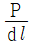
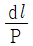
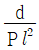
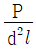
(정답률: 알수없음)
60. 1줄 리벳 겹치기 이음에서 리벳구멍의 지름이 피치의 3/8 일 때, 판의 효율은?
- 50.6%
- 62.5%
- 68.4%
- 72.5%
(정답률: 알수없음)
4과목: 철도차량공학
61. 새마을호 객차의 만(Mann) 대차에 사용되는 자축 베어링은?
- 실린더리컬 롤러 베어링
- 스훼리컬 베어링
- 테이퍼 베어링
- 스러스트 베어링
(정답률: 알수없음)
62. 다음 그림에서 대차중심간 거리는?
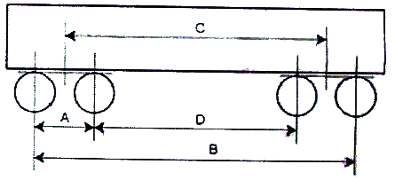
- A
- B
- C
- D
(정답률: 알수없음)
63. 주행 시 차륜과 레일의 마모를 감소시키기 위하여 오일을 일정량씩 차륜답면에 분사시키는 것은?
- 도유기 장치
- 차륜답면 청소장치
- 배장기
- 센터 피봇
(정답률: 알수없음)
64. 냉방 사이클 순환회로로 맞는 것은?
- 압축기 → 건조기 → 응축기 → 팽창밸브 → 증발기
- 압축기 → 응축기 → 건조기 → 팽창밸브 → 증발기
- 압축기 → 건조기 → 팽창밸브 → 응축기 → 증발기
- 압축기 → 응축기 → 건조기 → 증발기 → 팽창밸브
(정답률: 알수없음)
65. 8000대 전기기관차용 팬터그래프(형식 8WLO 176-6YG56 single arm type)의 제원으로 틀린 것은?
- 선로면에서 설치부까지의 높이는 3890.5mm이다.
- 집전 탄소판의 수는 4개이다.
- 정격 전류는 500A이다.
- 탄소 집전자 지지판 사이의 거리는 360mm 이다.
(정답률: 알수없음)
66. 대차 중심간 거리가 12m인 차량이 곡선반경 120m인 선로 위를 지날 때 중앙부의 수평편의는?
- 100mm
- 150mm
- 200mm
- 250mm
(정답률: 알수없음)
67. 절대공기 압력에 민감한 센서 조립체가 마련되어, 정확한 공연비 확보를 위해 부하조정기의 작용범위 내에서 공기 공급에 비례한 기관 부하를 조정하도록 작용하는 것은?
- 조속기
- 디콤프
- 저유압차단장치
- 오버라이딩 솔레노이드
(정답률: 알수없음)
68. 급수관 보온에 사용되는 자기조정 히터의 원리로 맞는 것은?
- 비절연체인 폴리머와 절연선 수소의 혼합물로 온도가 낮아지면 소자가 축소하여 수소끼리 접촉하여 전도가 되고 팽창하면 전도가 증가하여 자동으로 온도 조절을 하게 된다.
- 비절연체인 폴리머와 절연선 탄소의 혼합물로 온도가 높아지면 소자가 팽창하여 탄소끼리 접촉하여 전도가 되고 팽창하면 전도가 감소하여 자동으로 온도 조절을 하게 된다.
- 절연체인 폴리머와 비전도성 질소의의 혼합물로 온도가 높아지면 소자가 팽창하여 질소끼리 접촉하여 전도가 되고 축소하면 전도가 감소하여 자동으로 온도 조절을 하게 된다.
- 절연체인 폴리머와 전도성 탄소의 혼합물로 온도가 낮아지면 소자가 축소하여 탄소끼리 접촉하여 전도가 되고 팽창하면 전도가 감소하여 자동으로 온도 조절을 하게 된다.
(정답률: 알수없음)
69. 제동장치에서 동력원에 의한 분류 중 제동시에 견인전동기 발전기와 같은 역할을 하도록 하는 것으로 전기자의 역토크를 이용하여 제동력을 얻는 방식은?
- 컨버터제동
- 전기제동
- 답면제동
- 수용제동
(정답률: 알수없음)
70. 자동 연결기에 대한 설명으로 맞는 것은?
- 연결기의 본체는 헤드, 샹크, 테일의 3부분으로 구성된다.
- 견일할 때는 양 연결기의 외면으로 밀도록 되어 있다.
- 헤드는 넉클, 요크, 새클 핀 등으로 구성된다.
- 자동연결기에는 연결위치, 폐쇄위치, 완충위치의 작용 위치가 있다.
(정답률: 알수없음)
71. 전동차용 전동기 특성에 대한 설명으로 틀린 것은?
- 큰 회전력을 발생한다.
- 속도제어가 넓다.
- 전력소비량이 적다.
- 코일 권수를 적게 하여 히스테리시스를 감소한다.
(정답률: 알수없음)
72. 공기스프링 대차에서 좌우 공기스프링에 압력차가 생겼을 때 압력을 조정해 주는 장치로 맞는 것은?
- 부가스프링(additional spring)
- 높이 조정변(leveling valve)
- 역지변(check valve)
- 보정 밸브(relief valve)
(정답률: 알수없음)
73. 철도차량의 탈선 이론에서 차량 전복에 미치는 영향과 가장 거리가 먼 것은?
- 차체에 대한 풍압력
- 주행에 의해 발생되는 횡진동 관성력
- 곡선통과시 원심력
- 로드 홀딩 현상
(정답률: 알수없음)
74. 객차의 자중이 43톤(ton), 하중은 40톤(ton)이다. 객차 영차시 차중율은?
- 2.5
- 2.1
- 1.1
- 0.9
(정답률: 알수없음)
75. 동력전달장치에서 추진축의 기능에 대한 설명으로 틀린 것은?
- 정적 사이클
- 무기분사 사이클
- 정압 사이클
- 사바테 사이클
(정답률: 알수없음)
76. 동력전달장치에서 추진축의 기능에 대한 설명으로 틀린 것은?
- 구동 토크를 전달한다.
- 각도변화를 가능하게 한다.
- 회전력을 증대 시킨다.
- 축 방향 길이 변화를 보상한다.
(정답률: 알수없음)
77. 디젤전기기관차의 부하조정기를 움직이는 원동력은?
- 윤활유압
- 냉각수압
- 공유압
- 주공기압
(정답률: 알수없음)
78. 신형디젤전기기관차 AN회로 모듈 작동 원인으로 틀린 것은?
- 기관과열
- 접지계전기 동작
- 차륜 공전
- 여자 제한장치 동작
(정답률: 알수없음)
79. 정전용량 단위가 아닌 것은?
- μF
- pF
- zF
- nF
(정답률: 알수없음)
80. 연속하는 하향 구배에 있어서 제동을 사용하여 규정속도를 갖는 운전방법으로 가장 먼저 적용하는 것은?
- 억속제동
- 비상제동
- 상용제동
- 적공제동
(정답률: 알수없음)
5과목: 기계제작법
81. 슈퍼피니싱(superfinishing)에 관한 설명으로 틀린 것은?
- 가공면은 매끈하고 방향성이 있으며 또한 가공에 의한 표면의 변질층이 매우 크다.
- 숫돌을 진동시키면서 가공물을 완성가공하는 방법이다.
- 원통형의 외면, 내면, 평면 등의 가공에 쓰이고, 특히 중요한 축의 베어링 접촉부 및 각종 게이지의 가공에 사용된다.
- 입도가 작고, 연한 숫돌을 작은 압력으로 가공물의 표면에 가압하면서 매끈한 표면으로 가공한다.
(정답률: 알수없음)
82. 래핑(lapping) 가공의 장점에 대한 설명으로 틀린 것은?
- 가공이 간단하고 대량 생산이 가능하다.
- 가공면이 매끈한 거울면(mirror)을 얻을 수 있다.
- 정밀도가 높은 제품을 만들 수 있다.
- 가공면은 윤활성 및 마모성이 증가한다.
(정답률: 알수없음)
83. 줄수 n은 호브로, 잇수 Z인 치차를 절삭가공할 때, 다음 중 옳은 것은?
- 호브의 회전수/치차 소재의 회전수 = Z
- 호브의 회전수/치차 소재의 회전수 = 1/Z
- 호브의 회전수/치차 소재의 회전수 = Z/n
- 호브의 회전수/치차 소재의 회전수 = n/Z
(정답률: 알수없음)
84. 센터리스 연삭기에서 공작물의 이송속도를 구하는 식으로 옳은 것은? (단, f : 공작물의 이송속도(mm/min), N : 조정숫돌의 회전수(rpm), α : 연삭숫돌에 대한 조정숫돌의 경사각(2° ~ 8°), d : 조정숫돌의 지름(mm)이다.)
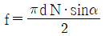
- f = πdN · sinα
- f = 2πdN · sinα
- f = 3πdN · sinα
(정답률: 알수없음)
85. MIG 용접에 관한 설명 중 틀린 것은?
- 불활성가스 금속 아크 용접이라고도 한다.
- 3mm 이상의 두꺼운 판의 용접에도 능률적이다.
- 주로 교류 정극성을 많이 사용한다.
- 전극자체가 소모된다.
(정답률: 알수없음)
86. 저탄소강의 표면에 탄소를 침투시키는 고체 침탄법에 대한 일반적인 설명으로 틀린 것은?
- 침탄시간이 길어지면 침탄깊이가 깊어진다.
- 소량생산에 적합하다.
- 큰 부품의 처리가 가능하다.
- 보통 침탄 깊이가 5~10mm이다.
(정답률: 알수없음)
87. 일명 잠호용접이라 하며, 피복하지 않은 아크 용접봉과 모재 사이 또는 피복하지 않은 아크 용접보의 아크로부터 발생하는 열로 용접하는 방법은?
- 서브머지드 아크 용접
- 불활성 가스 아크 용접
- 원자 수소 용접
- 프로젝션 용접
(정답률: 알수없음)
88. 프레스 가공의 특징이 아닌 것은?
- 다품종 소량 생산에 적합하지 않다.
- 가공재료에는 철금속만 이용된다.
- 균일한 제품을 대량으로 생산 가능하다.
- 재료를 경제적으로 사용할 수 있다.
(정답률: 알수없음)
89. 내경 측정에 주로 이용되는 측정기는?
- 실린더 게이지
- 하이트 게이지
- 측장기
- 게이지 블록
(정답률: 알수없음)
90. 단조를 위한 재료의 가열법 중 틀린 것은?
- 너무 과열되지 않게 한다.
- 재료의 내외부를 균일하게 가열한다.
- 될수록 급격히 가열하여야 한다.
- 너무 장시간 가열하지 않도록 한다.
(정답률: 알수없음)
91. 프레스 전단 가공의 종류 중 판재에서 타발된 쪽이 스크랩(scrap)이 되고 남은 부분이가공 제품이 되는 것은?
- 블랭킹(blankign)
- 피어싱(piercing)
- 셰이빙(shaving)
- 트리밍(trimming)
(정답률: 알수없음)
92. 게이지 블록의 치수 안정도 등급에 해당하지 않는 것은?
- P급
- 0급
- 1급
- 2급
(정답률: 알수없음)
93. 금속을 소성가공할 때 열간가공과 냉간가공의 구별은 어떤 온도를 기준으로 하는가?
- 담금질 온도
- 변태 온도
- 재결정 온도
- 단조 온도
(정답률: 알수없음)
94. 유동형(flow type) 칩이 발생되는 조건으로 틀린 것은?
- 절삭깊이를 작게 할 때
- 절삭속도가 빠를 때
- 연성의 재료를 가공할 때
- 공구의 윗면 경사각을 작게 할 때
(정답률: 알수없음)
95. 버니어캘리퍼스에서 어미자의 최소눈금이 0.5mm이고, 아들자의 눈금방법은 12mm를 25등분 할 때, 최소 측정값은 몇 mm 인가?
- 0.02
- 0.03
- 0.04
- 0.⑤
(정답률: 알수없음)
96. 밀링 가공에서 분할작업시 신시네티형 분할대로 5등분하려면 분할 크랭크의 회전수를 얼마로 하면 되는가? (단, 분할 스핀들 1회전에 필요한 분할크랭크 핸들의 회전수는 40 이다.)
- 7
- 8
- 9
- 10
(정답률: 알수없음)
97. 주물사의 구비조건이 아닌 것은?
- 통기성이 좋을 것
- 성형성이 좋을 것
- 열전도성이 높을 것
- 내열성이 높을 것
(정답률: 알수없음)
98. 두께 2.5mm이며, 지름 50mm의 원형동판을 블랭킹하는데 필요한 최소 펀치력(전단하중)은 약 몇 kgf인가? (단, 동판의 전단저항을 25kgf/mm2 라 한다.)
- 3460
- 7210
- 9820
- 18560
(정답률: 알수없음)
99. 밀링작업에 있어서 지름 50mm, 날수 15개인 평면커터로 주축회전수 200rpm, 테이블 이송속도 1500mm/min 으로 가공할 때 커터날 당 이송량(mm/tooth)은?
- 0.3
- 0.5
- 0.7
- 0.9
(정답률: 알수없음)
100. 물리적인 표면 경화법이 아닌 것은?
- 화염 경화법
- 고주파 경화법
- 금속 침투법
- 쇼트 피닝법
(정답률: 알수없음)
이 문제에서는 보의 굽힘 강성 EI가 일정하므로, 처짐량은 길이와 하중에 비례합니다. 따라서, 양단고정보의 길이가 단순보의 길이의 2배이므로, 양단고정보의 최대 처짐량(δ2)은 단순보의 최대 처짐량(δ1)의 1/4밖에 되지 않습니다.
따라서, δ2/δ1 = 1/4 이므로, 정답은 "1/4"입니다.